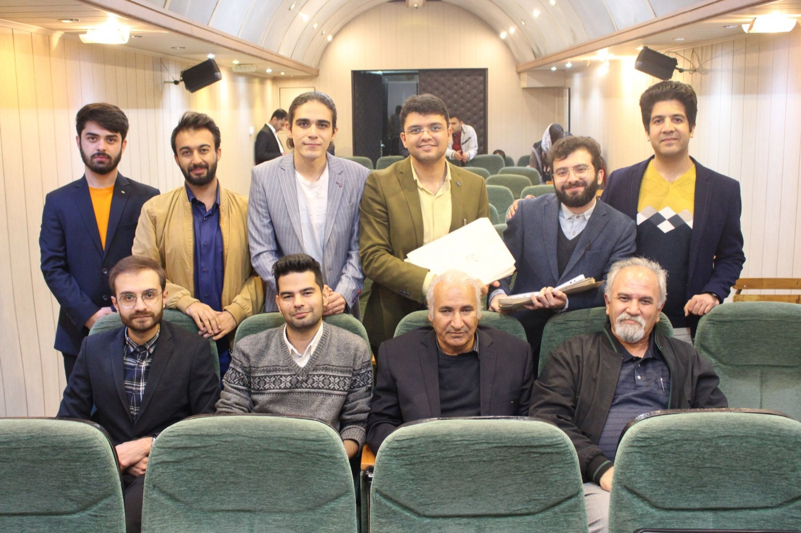
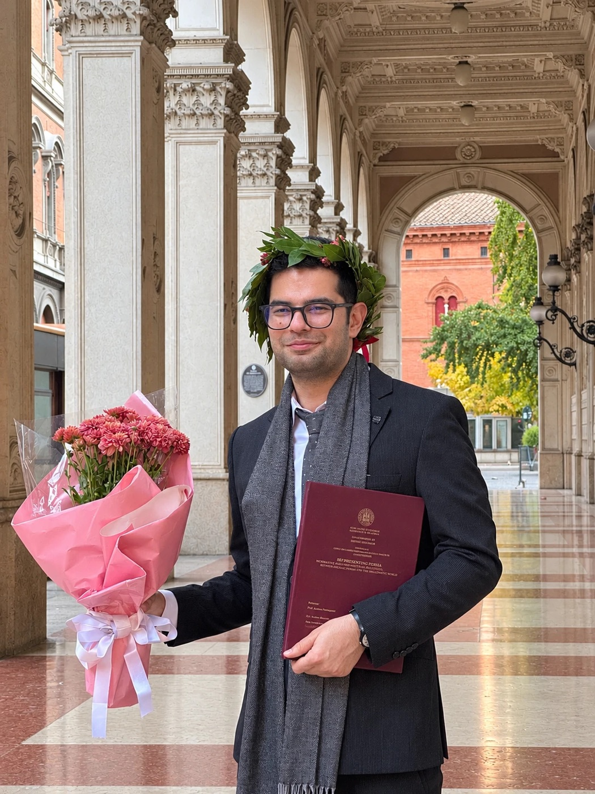
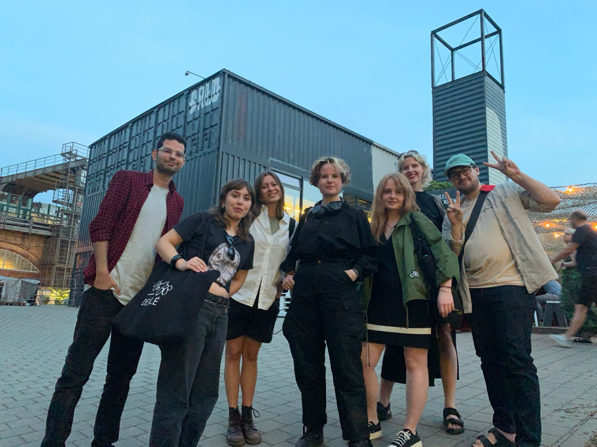
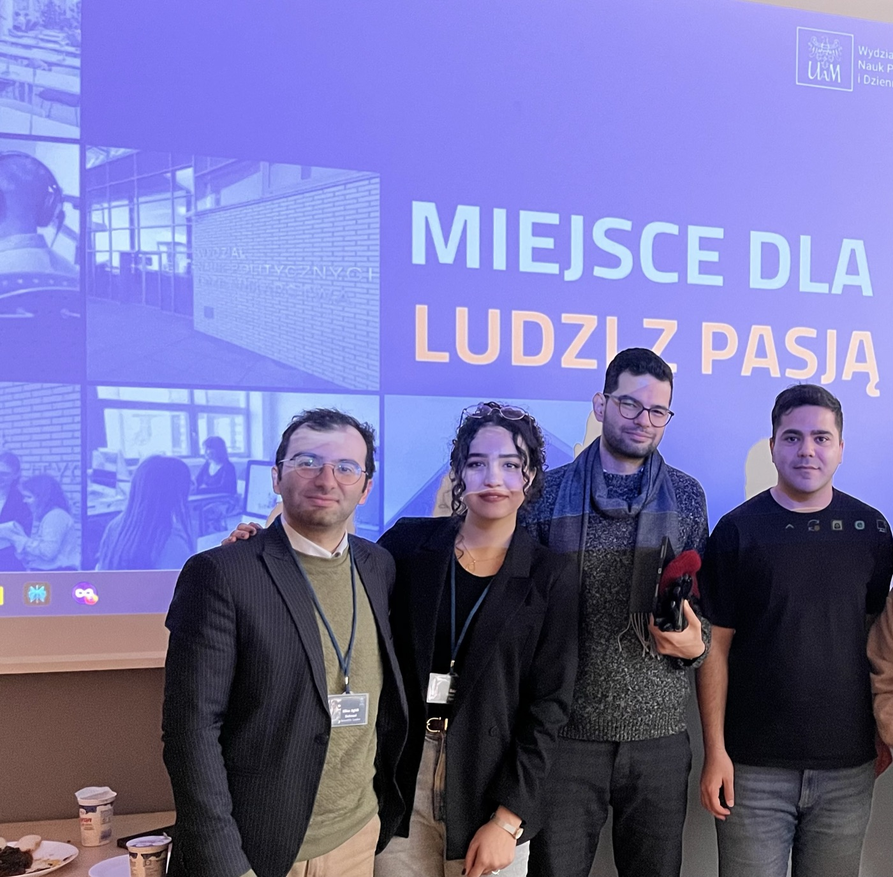
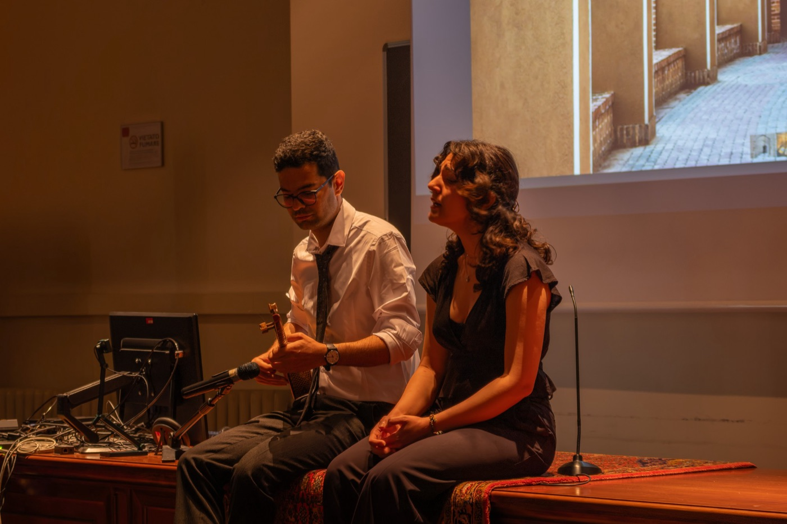
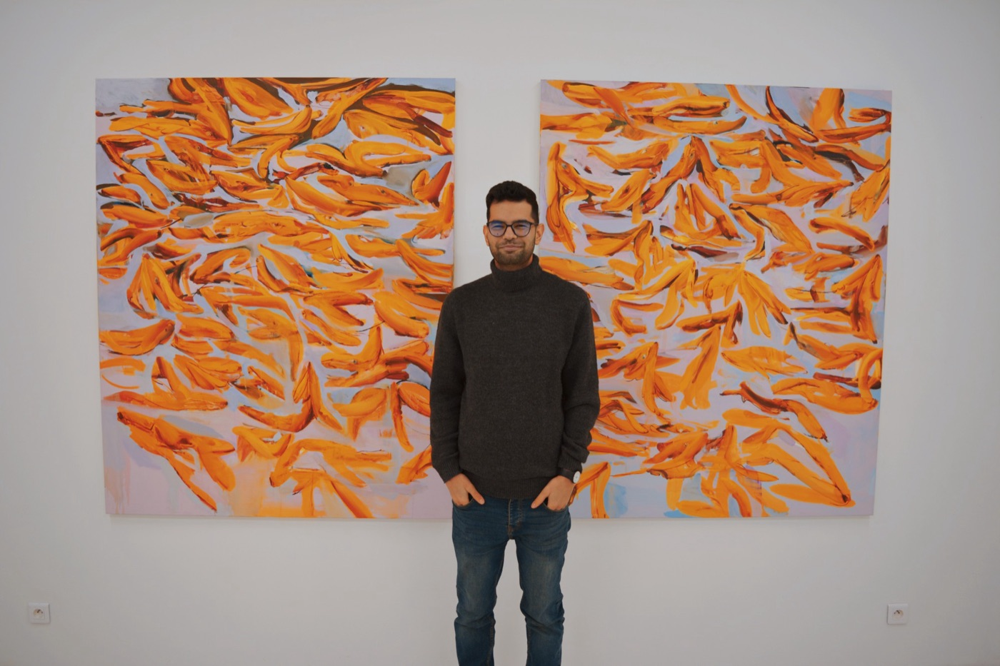
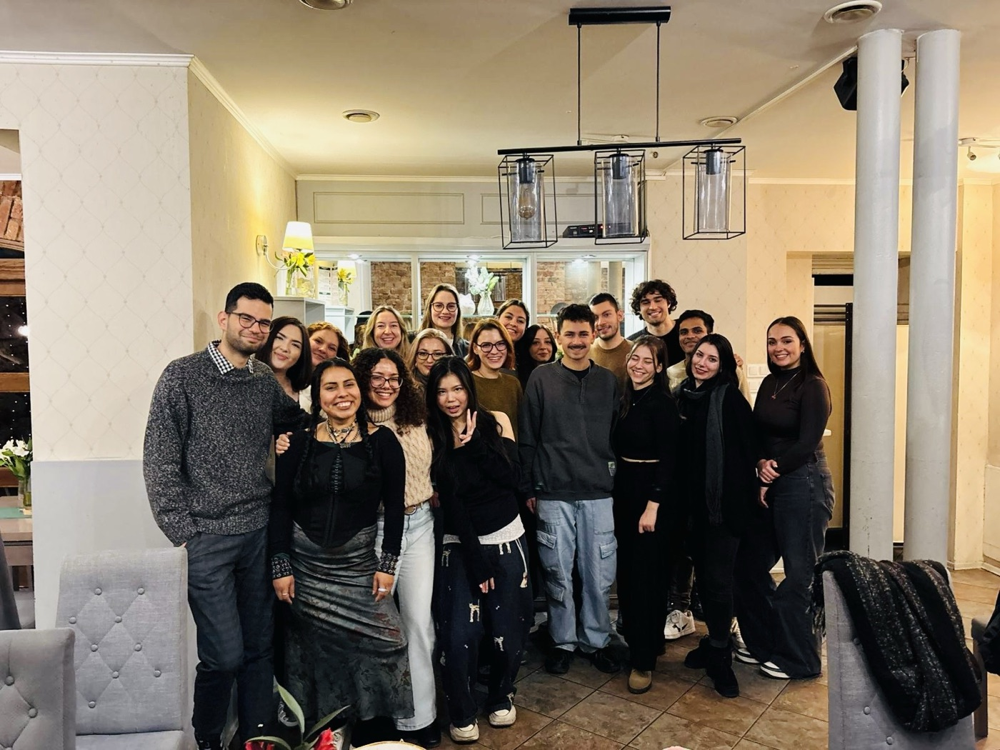
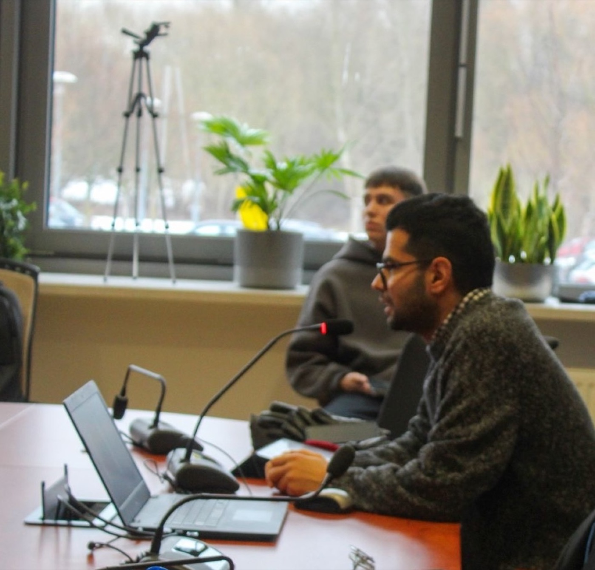

2015
The first language. Mahmoud began English Translation at the University of Isfahan — learning to carry meaning between cultures.
mahmoud mohammadi
art historian_1995
Latest publication
In numbers
Every city is a step forward. Here's how the journey from Isfahan to Paris is shaping up.
CV / 2026

2015
The first language. Mahmoud began English Translation at the University of Isfahan — learning to carry meaning between cultures.
2019

2023
Finding the museum. A master's in Visual Arts, Museology and Curatorship at the University of Bologna turned research toward the exhibition.

2024

2025
Between Paris and Poznań. Erasmus+ research at Paris 8, art mediation in Romainville and at the Grand 8 Festival, and a guest talk in Poznań.

2026

now
From Isfahan to Paris. A thesis on the Persian photographs of the INHA, two articles and five languages — with Iran still the anchor.
A co-authored study of purity rules in Sasanian texts is out in Ancient Iranian Studies — and a second article, on Manichaean iconography, is accepted by Brill.
ask for a copyguest talk
poznań, poland
nov 28, 2025
Curriculum vitae
Mahmoud Mohammadi
Art historian · Exhibition scenographer · Translator
Paris, France
maahaan.1995@gmail.com
linkedin.com/in/mahmoud-mohammadi · github.com/moarthist
22,48 m² Contemporary Art Gallery · Romainville, France

Paris 8 University Vincennes-Saint-Denis · Saint-Denis, France
Library of the Department of Foreign Languages, University of Bologna · Italy
University of Bologna · Italy
Specialisation: virtual exhibitions and museums.
Thesis: RE-PRESENTING PERSIA: Micromuseum practices in the photographic collection of the French National Institute for Art History (INHA)
Iran
Thesis: a transtextual study of the Kalamkari textiles of India and Iran.
University of Isfahan · Iran
Paris 8 University · Saint-Denis, France
SWPS University · Poznań, Poland

University of Liège · Belgium

University of Bologna · Italy
Performance on the setar, a traditional Iranian instrument.
Adam Mickiewicz University · Poznań, Poland
Iran
Ranked 70th of 3,679 candidates.
Berlin Summer University of the Arts · Germany
CAVILAM – Alliance Française de Vichy · France
French Ministry of National Education
École Polytechnique · Coursera
Ministry of Cultural Heritage, Handicrafts and Tourism · Iran
CEFR levels.
© 2026 Mahmoud Mohammadi. All rights reserved.
write to me